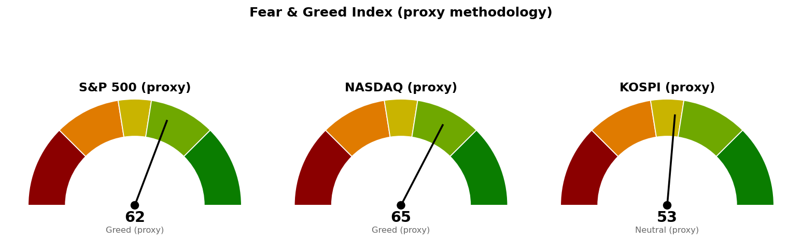

코스피는 9월 21일 13:53 장중값이며 세션은 15:30에 끝납니다. 미국 지수·섹터·금리·변동성지수는 뉴욕 9월 18일 확정 종가이고, 니케이 225도 9월 18일 값이 최신입니다.
| 직전에 건 조건 | 판정 | 근거 |
|---|---|---|
| 코스피 기준선 6,815 사수 (종가) | 충족 | 9월 18일 확정 종가 6,894, 오늘 장중 7,019로 위에 있습니다 |
| 코스피 도착지 7,025 (고가 도달) | 충족 | 오늘 장중 고가 7,028로 닿았습니다 |
| 코스피 사다리 1차 6,702 (장중 터치) | 미충족 · 집행 없음 | 9월 18일 저가 6,831 · 오늘 저가 6,938로 둘 다 위에서 멈췄습니다 |
| S&P 500 일봉 종가 7,668 회복 | 미충족 | 9월 18일 종가 7,651, 고가 7,657로 11포인트(하루 평균 변동폭 66의 0.17배) 아래에서 멈췄습니다 |
| S&P 500이 7,604를 종가로 지킴 | 충족 | 저가 7,611로 6포인트 위에서 버텼고 종가 7,651입니다 |
| S&P 500 도착지 7,760 (고가 도달) | 미충족 | 고가 7,657로 103포인트(1.56배) 아래입니다 |
| S&P 500 사다리 1차 7,604 (장중 터치) | 미충족 · 집행 없음 | 위와 같은 저가입니다 |
| 나스닥 일봉 종가 26,680 회복 | 미충족 | 종가 26,523, 고가 26,545로 135포인트(하루 평균 변동폭 315의 0.43배) 아래입니다 |
| 나스닥 사다리 1차 26,271 (장중 터치) | 미충족 · 집행 없음 | 저가 26,334로 63포인트(0.20배) 위입니다 |
| 30년 금리 5.286% 아래 | 미충족 | 9월 18일 종가 5.331%로 0.045%포인트 위입니다 |
"못 지키면 어디까지"는 이번 구간에서 시험받지 않았습니다. 세 지수 모두 아래쪽 지지 가격까지 내려간 적이 없습니다 — S&P 500 저가 7,611은 7,604에서 6포인트 위, 나스닥 저가 26,334는 26,271에서 63포인트 위, 코스피 저가는 9월 18일 6,831 · 오늘 6,938로 6,702 위입니다.
직전 계획은 미국 두 지수에서 그대로 살아 있고, 코스피에서는 끝났습니다. 코스피는 회복과 도착지를 차례로 채워 그 계획이 완주했으므로 아래 `## 지수 계획`에서 새 기준선을 냅니다. 미국 두 지수의 가격은 한 자리도 옮기지 않았습니다 — 조건이 충족되지 않았기 때문입니다.
직전 브리핑의 수치 네 건을 정정합니다. 1. 코스피 9월 18일 종가를 6,875로 적었으나 확정값은 6,894입니다. 2. 니케이 225 9월 18일 종가를 65,200(+1.66%)으로 적었으나 확정값은 65,019(+1.38%)입니다. 3. 30년 금리 9월 18일 값을 장중 5.336%로 적었으나 확정 종가는 5.331%이며, 조건선과의 간격은 0.050%포인트가 아니라 0.045%포인트입니다. 4. Netflix (NFLX) 10주와 Fluence Energy (FLNC) 270주에 낸 정리 지시는 잘못이었고, 지금은 유효하지 않습니다. 두 지시는 미진입 상태의 셋업 손절을 보유분에 적용한 것이었습니다. 그 뒤 각 종목의 리포트(NFLX 9월 18일 · FLNC 9월 19일)가 기준 가격을 다시 등록했고, 오늘 훑기에서 두 종목 모두 조치가 없는 보유 유지입니다.
| 줄 | 내용 |
|---|---|
| 현재 위치 | 7,651 (9/18 종가, +0.17%, 고가 7,657 · 저가 7,611). 20일선(최근 20일 평균 가격선이되 최근 가격에 더 무게를 두는 지수이동평균) 7,645보다 6포인트(하루 평균 변동폭 66의 0.08배) 위, 50일선 7,604보다 47포인트(0.71배) 위. 상대강도지수(최근 14일 동안 오른 폭과 내린 폭의 비율을 0~100으로 나타낸 값) 50.7 |
| 기준선 | 7,668 (직전 그대로) — 일봉 종가로 위에서 마쳐야 인정합니다. 현재가에서 18포인트(0.26배) 위입니다. 신규 종목 편입 재개는 여기에 더해 30년 금리 5.286% 아래가 같이 충족돼야 합니다 |
| 지키면 | 7,760 (직전 그대로). 7,750 단위 가격과 8월 28일 스윙 고점 7,771이 겹치고 10거래일 전에도 반응했습니다(겹침 점수 2.3). 110포인트(1.66배) 위입니다. 그 위 7,801(8월 13일 고점 7,817 + 90일 박스 상단 7,794, 점수 3.5)이 151포인트(2.28배) 위입니다 |
| 못 지키면 | 7,604 (직전 그대로). 7,600 단위 가격과 50일선 7,604, 9월 1일 스윙 저점 7,611이 모인 구간(7,600~7,611, 겹침 점수 3.3)이며 47포인트(0.70배) 아래입니다. 그 아래 다음 지지는 7,568(7,550 단위 가격 + 5회 반응 선반 + 6월 15일·7월 15일 스윙 고점, 점수 4.5)으로 83포인트(1.25배) 아래입니다 |
| 매수 사다리 | 1차 7,604 · 계좌의 3% / 2차 7,568 · 계좌의 3% / 취소선 7,511(7,500 단위 가격 + 7회 반응 선반 7,522, 점수 2.8, 140포인트·2.11배 아래). 두 회차가 다 물려 취소선에서 정리하면 계좌 대비 -0.06%입니다 |
| 예상 기간 | 기준선까지 0.26일치, 도착지까지 1.66일치, 1차 회차까지 0.70일치, 취소선까지 2.11일치 변동폭입니다. 기준선은 한 세션 안에 닿을 수 있는 거리입니다 |
7,604는 사다리 1차이면서 되돌림 판정선입니다. 장중에 터치하면 1차 회차를 집행하고, 일봉 종가로 그 아래에서 마치면 축소 검토로 돌아가며 남은 회차를 멈춥니다. 90일 박스는 7,282~7,794이고 박스 안쪽은 지지 테스트마다 매도 거래량이 늘면서 저점은 절상되는 상태라 매집·분산 어느 쪽 우위도 판정되지 않았습니다. 직전과 같습니다.
| 줄 | 내용 |
|---|---|
| 현재 위치 | 26,523 (9/18 종가, +0.39%, 고가 26,545 · 저가 26,334). 20일선 26,263보다 260포인트(하루 평균 변동폭 315의 0.82배) 위, 50일선 26,111보다 412포인트(1.31배) 위. 상대강도지수 55.7 |
| 기준선 | 26,680 (직전 그대로) — 일봉 종가로 위에서 마쳐야 인정하며, 157포인트(0.50배) 위입니다. 바로 위 26,701~26,800 구간(8월 28일·8월 5일·6월 16일 스윙 고점 + 26,800 단위 가격, 점수 2.3)이 이 선을 받치는 저항대입니다 |
| 지키면 | 26,976 (직전 그대로). 90일 박스 상단 26,951과 27,000 단위 가격, 8월 13일 고점 26,876이 겹칩니다(점수 3.5). 453포인트(1.44배) 위입니다 |
| 못 지키면 | 26,271 (직전 그대로). 252포인트(0.80배) 아래입니다. 이 자리의 겹침 구성이 바뀌었습니다 — 20일선이 26,252에서 26,263으로 올라가면서 구간이 26,289~26,400(8회 반응 선반 + 저항에서 지지로 바뀐 자리 + 7월 15일 스윙 고점 + 26,400 단위 가격, 점수 4.0)과 26,111~26,263(50일선·20일선·26,200 단위 가격, 점수 2.1)으로 갈라졌고, 26,271은 그 사이에 놓였습니다. 가격은 그대로 두되 받침이 하나에서 둘로 나뉘었다는 뜻입니다. 여기를 종가로 잃으면 다음은 26,030(9월 1일 스윙 저점 25,996 + 26,000 단위 가격, 점수 4.5)으로 493포인트(1.56배) 아래입니다 |
| 매수 사다리 | 1차 26,271 · 계좌의 3% / 2차 26,030 · 계좌의 3% / 취소선 25,904(25,800 단위 가격 + 8월 24일 스윙 저점 25,911 + 7회 반응 선반, 점수 4.5, 619포인트·1.96배 아래). 두 회차가 다 물려 취소선에서 정리하면 계좌 대비 -0.06%입니다 |
| 예상 기간 | 기준선까지 0.50일치, 도착지까지 1.44일치, 1차 회차까지 0.80일치, 취소선까지 1.96일치 변동폭입니다 |
90일 박스는 24,807~26,951이고 박스 안에서 저점이 낮아지고 있어 매집·분산 어느 쪽 우위도 판정되지 않았습니다. 일봉 되돌림선은 이번에도 산출되지 않았습니다 — 직전 상승 구간의 종점이 6월 1일로 지금 보는 구간의 앞쪽에 있어 되돌림선이 낡았기 때문이며, 그래서 나스닥 가격은 선반·겹침 구간·박스로만 잡았습니다.
| 줄 | 내용 |
|---|---|
| 현재 위치 | 7,019 (9/21 장중 13:53, +1.81%, 시가 6,938 · 고가 7,028 · 저가 6,938). 20일선 6,811보다 208포인트(하루 평균 변동폭 232의 0.90배) 위, 50일선 6,879보다 140포인트(0.60배) 위. 상대강도지수 55.8 |
| 기준선 | 7,054 (직전 6,815에서 올림) — 일봉 종가로 위에서 마쳐야 인정하며, 35포인트(0.15배) 위입니다. 옮긴 이유는 직전 기준선 6,815와 도착지 7,025가 둘 다 충족돼 그 계획이 완주했기 때문입니다. 지금 지수는 6,996~7,054 구간(7회 반응 선반 + 지지에서 저항으로 바뀐 자리 + 8월 27일 스윙 고점 + 5월 20일 스윙 저점, 점수 3.9)을 오늘 처음 시험하는 중이고, 7,054는 그 구간의 위쪽 끝입니다 |
| 지키면 | 7,199. 9월 8일 스윙 고점 7,172와 8월 18일 고점 7,217, 5회 반응 선반, 일봉 50% 되돌림선 7,214가 모인 구간(7,172~7,217, 점수 4.5)이며 9거래일 전에 반응했습니다. 180포인트(0.78배) 위입니다 |
| 못 지키면 | 6,830. 6,800 단위 가격과 20일선 6,811, 50일선 6,879가 모인 구간(6,800~6,879)이며 189포인트(0.82배) 아래입니다. 이 구간은 겹침 점수 1.6으로 얇습니다 — 그 아래 두꺼운 지지는 6,651(6,600 단위 가격 + 4회 반응 선반 + 저항에서 지지로 바뀐 자리 + 주봉 38.2% 되돌림선 6,673 + 일봉 61.8% 되돌림선 6,702, 점수 7.0으로 세 지수 중 가장 두꺼움)로 368포인트(1.59배) 아래이고, 6,830과 6,651 사이 179포인트(0.77배)에는 받칠 가격이 없습니다 |
| 매수 사다리 | 1차 6,702 · 계좌의 2%(구간 상단, 일봉 61.8% 되돌림선) / 2차 6,651 · 계좌의 2%(구간 중심) / 취소선 6,600(구간 하단, 일봉 종가 하회로 판정). 세 가격 모두 직전과 같습니다 — 터치된 적이 없어 옮기지 않았습니다. 1차까지 317포인트(1.37배), 취소선까지 419포인트(1.81배)로 지금 가격에서는 멉니다. 두 회차가 다 물려 취소선에서 정리하면 계좌 대비 -0.05%입니다 |
| 예상 기간 | 기준선까지 0.15일치, 도착지까지 0.78일치, 1차 회차까지 1.37일치 변동폭입니다. 기준선은 오늘 남은 세션 안에 결정됩니다 |
박스 판정이 바뀌었습니다. 직전까지 쓰던 40일 박스(6,024~7,128)는 이번 조회에서 방향성이 강해 박스로 성립하지 않았고, 유효 구간은 180일 박스 4,908~8,789입니다. 박스 안쪽은 저점이 낮아지고 지지 테스트 거래량이 혼조라 매집·분산 어느 쪽 우위도 판정되지 않았습니다. 폭이 하루 평균 변동폭의 16.7배라 이 박스의 상·하단은 당장의 집행 가격으로 쓰기 어렵고, 위 표의 가격은 전부 선반·겹침 구간·되돌림선에서 가져왔습니다.
세 지수 기준선이 이번에는 서로 다른 쪽을 가리킵니다 — 코스피는 도착지까지 닿아 다음 저항을 시험하는데, 미국 두 지수는 아직 기준선 아래입니다. 코스피의 다음 세션 시가는 오늘 밤 열릴 뉴욕 9월 21일 세션이 정하므로 코스피 계획은 미국장 결과에 선행 종속됩니다. 코스피 단독 신호만으로 결론을 앞당기지 마십시오.
세 지수 회차를 전부 집행하면 계좌의 16%(S&P 500 6% · 나스닥 6% · 코스피 4%)가 지수 노출로 들어갑니다. 세 지수가 모두 취소선까지 밀려 정리하는 최악의 경우 계좌 대비 -0.16%입니다. 갭으로 취소선을 건너뛰고 열리면 실제 손실은 이보다 커집니다. 지수 포인트로만 적었으므로 어떤 종목·ETF로 집행할지는 사용자가 정합니다.
| 지수 | 종가/현재 | 등락 | 고가 | 저가 |
|---|---|---|---|---|
| S&P 500 (9/18 종가) | 7,651 | +0.17% | 7,657 | 7,611 |
| 나스닥 종합 (9/18 종가) | 26,523 | +0.39% | 26,545 | 26,334 |
| 코스피 (9/21 장중) | 7,019 | +1.81% | 7,028 | 6,938 |
| 니케이 225 (9/18 종가) | 65,019 | +1.38% | 65,437 | 64,404 |
미국 두 지수는 9월 18일에 전 세션 종가 위에서 마쳤습니다. S&P 500은 시가 7,657이 그대로 고가였고 저가 7,611까지 46포인트를 반납했다가 7,651로 마쳐, 장중 폭 46포인트는 하루 평균 변동폭의 0.70배입니다. 나스닥은 장중 폭 211포인트로 0.67배입니다.
코스피는 시가 6,938에서 한 번도 그 아래로 내려가지 않고 고가 7,028까지 올라 현재 7,019입니다. 니케이 225는 9월 18일 값이 최신이며 오늘은 조회된 세션이 없습니다.
미국 섹터를 20일 초과수익(SPDR 업종 ETF의 지수 대비 초과 성과)으로 줄 세운 결과입니다. 하루치 등락률이 아니라 이 값이 주도섹터 판정 기준입니다.
| 주도 (20일 초과) | 20일 | 5일 | 1일 | 부진 (20일 초과) | 20일 | 1일 | |
|---|---|---|---|---|---|---|---|
| 기술 (XLK) | +3.43% | +1.11% | +0.65% | 유틸리티 (XLU) | -6.22% | -1.58% | |
| 에너지 (XLE) | +0.76% | -1.19% | -0.43% | 부동산 (XLRE) | -5.78% | -1.12% | |
| 커뮤니케이션 (XLC) | -0.00% | -1.51% | -1.54% | 산업재 (XLI) | -5.70% | +0.27% |
상위 세 섹터의 순서는 나흘째 기술·에너지·커뮤니케이션 그대로인데 폭은 갈렸습니다 — 기술만 +2.89%에서 +3.43%로 벌렸고, 에너지는 +1.67%에서 +0.76%, 커뮤니케이션은 +0.82%에서 -0.00%로 좁혀져 커뮤니케이션은 지수와 같아졌습니다. 헬스케어(XLV)는 5일 초과 +1.92%로 11개 섹터 중 가장 높은데 20일로는 -2.44%여서, 최근 닷새의 움직임이 아직 20일 순위를 뒤집지 못했습니다.
한국 섹터는 테마형 ETF 기준이라 미국 업종 ETF와 성격이 다릅니다. 20일 초과수익 상위는 건설 +10.29%, 반도체 +5.59%, AI전력기기 +5.14%, 은행 +2.77%이고 하위는 헬스케어 -16.28%, 자동차 -16.08%, 인터넷 -10.46%입니다. 직전(9/19 조회)과 견주면 반도체만 +3.27%에서 +5.59%로 올라 2위가 됐고 건설 +17.55%→+10.29%, AI전력기기 +13.43%→+5.14%, 2차전지 +7.89%→-5.86%로 나머지는 줄었습니다. 코스피가 +1.81% 오른 오늘 하루치로도 초과수익이 플러스인 섹터는 반도체(+1.56%포인트) 하나뿐이며 나머지 열 개는 전부 지수를 밑돌아, 오늘 상승분이 반도체에 몰려 있습니다.
오늘 한국 발굴이 뽑은 후보는 하나입니다. DL E&C (375500.KS)(건설, 진입 76,815원 · 손절 72,319원 · 목표 94,979원 · 손익비 1:4.04 · 손절 폭은 하루 평균 변동폭의 0.99배)이며, 현재가 85,300원은 진입가보다 위라 눌림을 기다리는 셋업입니다. 구조 엔진이 낸 후보일 뿐 정식 종목 리포트가 아니며, 관심종목에 자동으로 들어가지 않습니다 — 등록 여부는 사용자가 정합니다. 관심종목 목록은 현재 비어 있습니다. 126개를 훑어 거래대금 미달 84개, 추세 미달 22개, 우선주·중복 상장 8개, 52주 고점 대비 위치 이탈 6개, 상대강도 미달 2개, 이미 보고 있는 종목 2개가 걸러졌고, 구조 판정까지 간 2개 중 1개가 현재가 추격 비권장으로 떨어졌습니다.
| 항목 | 값 | 직전 대비 |
|---|---|---|
| 미국 경기선행지수 (2026년 8월) | 100.96 | 7월 100.89 대비 +0.06 |
| 한국 경기선행지수 (2026년 8월) | 102.87 | 7월 102.81 대비 +0.06 |
| 미 10년 명목금리 | 4.998% (9/18, 지수 시세) | 9/17 4.947% 대비 +0.051%포인트 |
| 미 10년 기대물가 | 2.33% (9/18) | 9/17·9/16과 같음 |
| 미 10년 실질금리 | 2.61% (9/17) | 9/16 2.68% 대비 -0.07%포인트 |
| 유가 (WTI) | 확정치 107.02달러 (9/15) · 최신 94.03달러 (9/21 선물) | 직전 종가 100.30달러 대비 -6.25% |
| 달러지수 (광의) | 118.21 (9/11) | 9/10 118.08 대비 +0.13 |
| 변동성지수 (VIX) | 14.81 (9/18) | 9/17 15.44 대비 -4.08%, 백분위 26.5 |
경기선행지수는 장기 평균을 100으로 놓고 경기 방향을 몇 달 앞서 보여주는 지표입니다(OECD 작성, 진폭조정 계열). 미국·한국 모두 8월치가 최신이고 전월 대비 +0.06으로 같은 폭입니다. 한 달 지연 발표되고 최근 값이 자주 수정되므로 정점·저점 판정에는 쓰지 않습니다. 직전 두 브리핑은 이 항목을 내지 않아 견줄 값이 없으며, 이번이 첫 기록입니다.
명목금리가 0.051%포인트 오르는 동안 기대물가는 2.33%로 붙어 있었으므로, 오른 몫은 실질금리 쪽입니다. 실질금리 자체의 확정치는 9월 17일 2.61%까지만 나와 있어 9월 18일 상승분은 아직 계열에 반영되지 않았습니다. 같은 날 달러지수는 9월 11일 이후 갱신이 없어 금리와 달러의 일치 여부는 확인하지 못했습니다.
30년 금리 5.331%는 신규 편입 재개 조건선 5.286%에서 0.045%포인트 위입니다. 9월 17일 0.010%포인트까지 좁혀졌다가 다시 벌어진 자리이며, 같은 조건의 다른 한쪽인 S&P 500 7,668은 18포인트 위입니다. 두 조건은 같이 충족돼야 하고, 금리를 움직일 첫 예정 발표는 10월 28일 FOMC입니다.
1. 일본은행 인상 뒤 엔 약세와 주가 상승이 함께 나온 이유 (CNBC, 9월 21일 01:02 UTC) 엔이 달러당 157을 넘어 약해지고 10년 일본국채 금리는 내렸으며 니케이 225는 올랐다는 기사입니다. 인상 발표가 긴축으로 읽히지 않은 구간이라는 뜻이며, 우리 자료의 니케이 9월 18일 확정 종가 65,019(+1.38%)와 오늘 코스피 +1.81%가 같은 방향입니다. 아시아 위험자산이 중앙은행 인상을 소화하는 국면이므로 코스피 기준선 7,054 판정에 유리한 배경이나, 배경은 기준선을 대신하지 않습니다 — 판정은 오늘 15:30 종가입니다.
2. 유가 하락, 원유 공급이 예상보다 견조 (CNBC, 9월 21일 04:51 UTC) 중동 긴장이 이어지는데도 사우디 선적이 회복되며 유가가 내렸다는 기사입니다. 원유 선물은 100.30달러에서 94.03달러로 -6.25%이고, 에너지 섹터 20일 초과수익이 +1.67%에서 +0.76%로 줄어든 것이 같은 방향입니다. 직전 브리핑에서 "공급 차질 재료와 가격 하락이 같이 있다"고 적었던 어긋남은 이번에 가격 쪽으로 정리됐습니다.
3. 소프트뱅크, OpenAI 투자용으로 100억달러 넘는 채권 발행 (Reuters, 9월 21일 01:43 UTC) AI 설비투자 자금을 채권시장에서 조달하는 사례입니다. 기술 섹터가 20일 초과수익 +3.43%로 유일하게 폭을 넓힌 것, 한국 반도체가 20일 초과 +5.59%로 2위에 올라온 것과 같은 축이며 보유 중인 삼성전자 (005930.KS)·SK하이닉스 (000660.KS)·SOL AI반도체TOP2플러스 (0167A0.KS)에 직접 걸립니다. 다만 이 조달이 10년 금리 4.998%·30년 5.331% 국면에서 이뤄진다는 점은 반대 방향의 부담이므로, 섹터 순위와 금리 조건선을 따로 봅니다.
이번 수집에서는 279건을 받아 10건을 추렸습니다.
| 지수 | 점수 | 구간 | 직전(9/19) |
|---|---|---|---|
| S&P 500 | 61.5 | 탐욕 | 58.7 |
| 나스닥 | 65.2 | 탐욕 | 62.0 |
| 코스피 | 52.7 | 중립 | 39.2 |

세 점수 모두 공식 CNN Fear & Greed 지수가 아니라 모멘텀·상대강도·변동성·안전자산 선호 네 항목으로 계산한 대용 지표입니다. 변동성 항목은 그 지수의 변동성이 자기 과거 3년 분포에서 차지하는 자리로 산출하며, 미국은 변동성지수 14.8이 백분위 26.5(표본 756일), 코스피는 내재변동성 지수가 없어 20일 실현변동성 연율화 31.5%가 백분위 71.2(표본 708일)입니다.
미국 두 지수는 각각 2.8포인트·3.2포인트 올라 탐욕 구간에 남았습니다. 상승분은 변동성 항목이 65.9에서 73.5로 오른 데서 가장 크게 나왔고, 변동성지수가 15.34에서 14.81로 내린 것이 그 근거입니다.
코스피는 39.2에서 52.7로 13.5포인트 올라 공포에서 중립으로 넘어왔습니다. 네 항목 중 셋이 올랐고(모멘텀 36.7→50.2, 상대강도 47.9→55.8, 안전자산 선호 46.1→77.0) 변동성만 28.3→28.8로 제자리입니다. 안전자산 선호가 30.9포인트 오른 것이 상승분의 대부분입니다. 다만 이 점수는 아직 마감하지 않은 오늘 세션의 값을 포함하므로 15:30 이후 달라질 수 있습니다.
| 날짜 (한국시간) | 이벤트 | 확인할 것 |
|---|---|---|
| 9월 21일 15:30 | 코스피 마감 (오늘) | 7,054 위에서 마치는지 · 6,830을 지키는지 |
| 9월 22일 05:00 | 뉴욕 정규장 마감 (미국 9/21) | S&P 500이 7,668 위에서 마치는지 · 7,604를 지키는지 · 나스닥이 26,680 위에서 마치는지 · 30년 금리가 5.286% 아래로 내려오는지 |
| 9월 24일 | 미국 주간 신규 실업수당 청구 | |
| 9월 30일 | PCE 물가지수 · GDP | 연준이 보는 물가 지표 |
| 10월 1일 · 8일 · 15일 · 22일 | 주간 신규 실업수당 청구 | |
| 10월 2일 | 고용보고서 (비농업 고용 · 실업률) | |
| 10월 14일 | CPI | 10월 FOMC 직전 마지막 물가 지표 |
| 10월 21일 | Netflix (NFLX) 실적 | 보유 10주 |
| 10월 28일 | FOMC (미국 10/27~28) · GE Vernova (GEV) · Bloom Energy (BE) 실적 | 30년 금리 조건을 움직일 첫 예정 발표 |
| 10월 29일 | PCE 물가지수 · GDP | |
| 11월 6일 · 13일 · 24일 | USA Rare Earth (USAR) · LightPath (LPTH) · Fluence Energy (FLNC)·Alibaba (BABA) 실적 | 보유 30주 · 200주 · 270주 · 8주 |
장부에 기록된 보유는 16개 종목이고 매도 기록은 여전히 없습니다.
1. 신규 종목 편입은 계속 중단입니다. 두 조건 중 지수는 18포인트 아래, 30년 금리는 0.045%포인트 위로 둘 다 미충족입니다. 2. 매수 쪽 — 지수 사다리는 대기이고 오늘 집행할 회차는 없습니다. 1차 회차는 S&P 500 7,604(0.70배 아래) · 나스닥 26,271(0.80배 아래) · 코스피 6,702(1.37배 아래)이며, 코스피는 오늘 오른 만큼 1차 회차가 멀어졌습니다. 장중 터치로 판정하므로 눌림이 오면 그때 집행하고, 취소선(7,511 · 25,904 · 6,600)을 일봉 종가로 잃으면 남은 회차를 멈춥니다. 3. 보유 16종목 전부 오늘 매매로 옮길 조치가 없습니다. 훑기에서 어느 종목도 등록된 기준 가격을 건드리지 않았습니다. 가장 가까운 것은 삼성전자 (005930.KS) 261,000원으로 회복선 262,000원까지 하루 평균 변동폭의 0.08배이며, 일봉 종가로 262,000원을 넘으면 매수 진입 대상이 됩니다. 4. Netflix (NFLX) 10주와 Fluence Energy (FLNC) 270주의 정리 지시는 취소합니다 — 위 정정 4번대로 잘못 낸 지시였습니다. 두 종목은 보유 유지이며, NFLX는 폐기선 70.32달러가 현재 71.79달러에서 1.47달러(하루 평균 변동폭 2.21달러의 0.66배) 아래에 있어 일봉 종가로 그 선을 잃으면 그때 10주를 정리합니다. FLNC는 가장 가까운 기준이 관망 종료 기준 7.00달러로, 잃으면 신규 매수를 접을 뿐 보유 270주는 유지입니다. 5. 기준 가격이 없는 2종목은 이번에도 판정할 수 없습니다. SOL 반도체전공정 (475300.KS) 350주 22,660원, TIGER 미국배당다우존스 (458730.KS) 1,006주 14,815원이며 둘 다 아직 리포트가 없습니다. 오늘 15:40 배치의 분석 대상이므로 그때까지 추가 매수도 정리도 하지 마십시오. 6. DL E&C (375500.KS)를 관심종목에 넣을지 알려 주십시오. 넣지 않으면 추적하지 않습니다.
다음 세션에 볼 것 하나 — 오늘 15:30 코스피 종가가 7,054 위인지입니다. 위에서 마치면 도착지 7,199를 노리는 구간으로 넘어가고, 아래에서 마치면 6,996~7,054 구간을 못 넘은 것이므로 기준선을 그대로 두고 다시 시험받기를 기다립니다.
ATR(하루 평균 변동폭): 최근 14일 동안 하루에 오르내린 폭의 평균. · EMA(지수이동평균): 최근 가격에 더 무게를 준 평균 가격선. · RSI(상대강도지수): 최근 14일 오른 폭과 내린 폭의 비율을 0~100으로 나타낸 값. · 겹침 점수: 같은 가격대에 지지·저항 근거가 몇 겹으로 모였는지 나타낸 값이며 클수록 두껍습니다.
이 문서는 참고 정보이며 투자자문이 아닙니다. 모든 수치는 위에 적은 기준 시각의 시장 자료에서 가져온 것이고, 투자 판단과 그 결과에 대한 책임은 투자자 본인에게 있습니다.